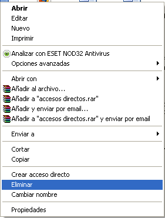
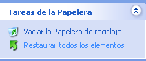

APLICACIONES DE WINDOWS
|
| Página Principal | Siguiente | ||||||||
Papelera de Reciclaje |
|||||||||
La Papelera de reciclaje es un área de almacenamiento donde se guardan archivos y carpetas previos a su eliminación definitiva de un medio de almacenamiento. A continuación se muestra las opciones mas comunes con las que trabaja la palelera:
|
|||||||||
Características conocidas
|
|||||||||
Borrando archivos Los archivos son movidos a la Papelera de reciclaje de distintas maneras:
Para borrar un archivo definitivamente sin que este pase antes por la Papelera de reciclaje, se debe presionar la tecla Mayús mientras se está borrando el archivo (por cualquiera de los métodos antes mencionados). |
 | ||||||||
Restaurar Archivos o Carpetas Restaurar Archivos o carpetas en su lugar de origen. Para restaurar todos los elementos de la papelera de clic en la flecha verde de la parte izquierda que dice Restaurar todos los elementos. Si sólo queremos restaurar algunos elementos: 1) Seleccione los Elementos a restaurar haciendo clic sobre ellos. Si son elementos alternativos utilice la tecla Control para seleccionarlos o la tecla Mayus si son consecutivos. 2)Una vez seleccionados aparecerá en la flecha verde de la parte izquierda un rótulo que dice Restaurar este elemento o Restaurar los elementos seleccionados Los archivos seleccionados volverán a estar en el sitio donde se encontraban antes de ser eliminados. Si no sabe dónde estaban anteriormente los elementos a restaurar fíjese antes de restaurarlo en la ruta que aparece en la columna Ubicación original ya que es ahí donde lo guardará. Restaurar Archivos o carpetas en un lugar distinto del que se eliminó. 1) Seleccione los Elementos a restaurar. 2) Pulse sobre la selección con el botón derecho y se desplegará un menú contextual, seleccione la opción Cortar. 3) Vaya al explorador de Windows y sitúese en la carpeta donde desee restaurar los archivos, después pulse Pegar o (control+V). |
 | ||||||||